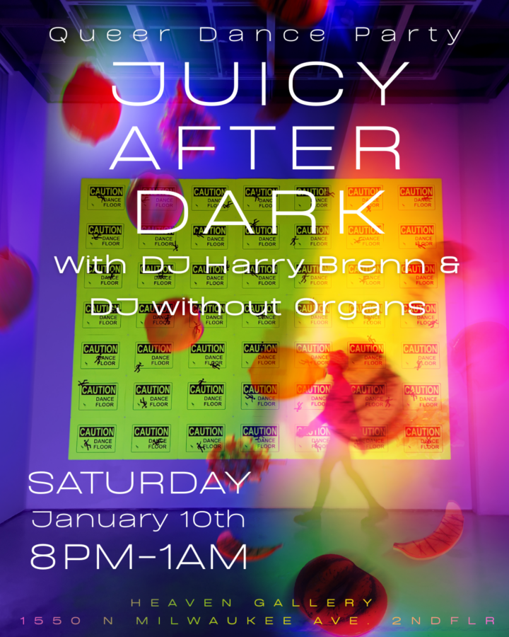

Juicy After Dark
Come celebrate the closing of Fruity Night and Of Faith or Fetish with us at our Juicy After Dark: Queer Dance Party featuring DJ Harry Brenn & DJ without Organs. Join us on Saturday, January 10th from 8pm-1am at Heaven Gallery!
Beverages will be available. $10 Suggested donation